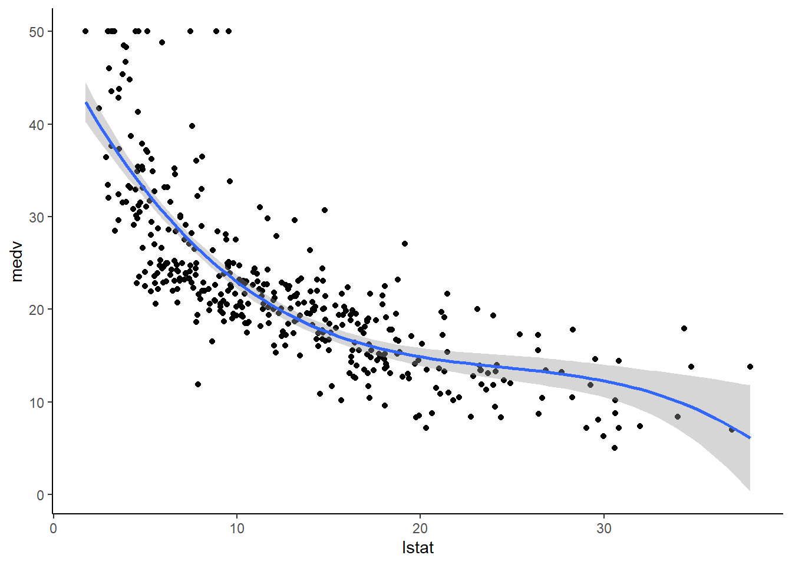
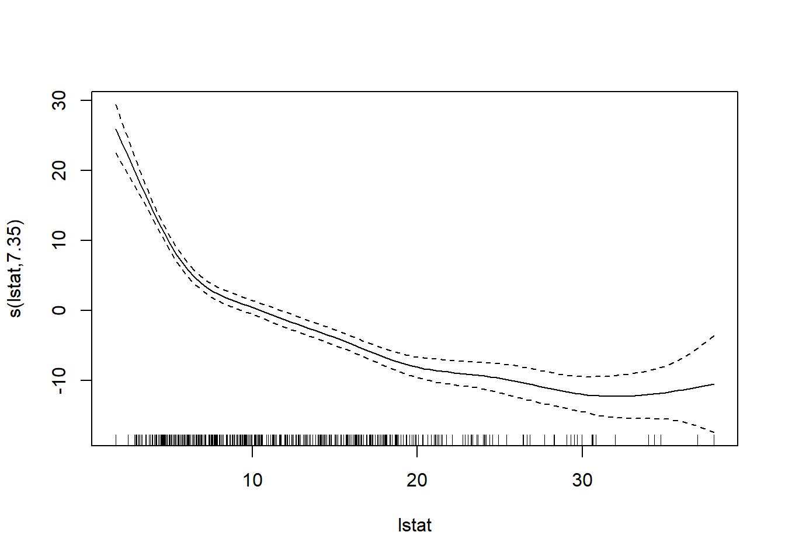
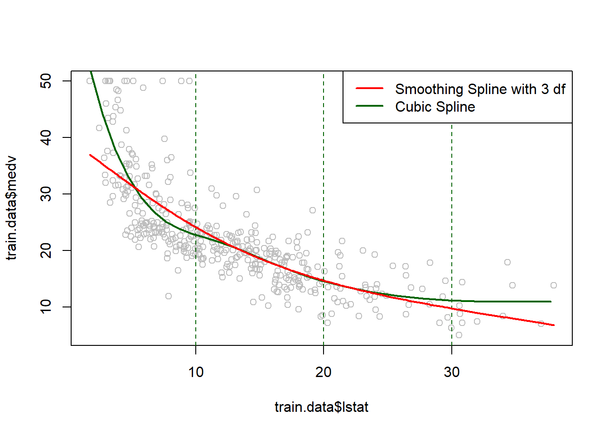

Chapter 3 Spline Regression
Beyond Linearity (including transformation of variables), we have arbitrary basis expansion (where the basis functions are dependent on X)
3.1 Basis Function Representations
Let the k-th basis function of X be denoted by \(b_k(X), k = 1,\dots, K\) which is function that maps from the p-dimensional real numbers to the real line.
Then, the linear functional representation of \(f(X)\) given by these basis functions is
\[ f(X) = \beta_0 + \sum_{k=1}^K \beta_k b_k(X) \]
Equivalently
\[ \mathbf{Y} = \mathbf{B} \beta + \mathbf{\epsilon} \]
where \(\mathbf{B}\) is the \(n \times (K+1)\) matrix columns given by a vector of 1 for the intercept and \(\mathbf{b}_k =(b_k(x_1), \dots, b_k (x_n))', k = 1, \dots, K\)
Then, we have
\[ \hat{\beta} = (\mathbf{B}^T \mathbf{B})^{-1} \mathbf{B}^T\mathbf{y} \]
if the basis functions are orthogonal, then we have a special case \(\hat{\beta} = \mathbf{B}^T \mathbf{y}\)
Some common basis functions;
Original linear model: \(b_k(X) = X_k, k = 1, \dots, p\)
Polynomials: \(b_k(X) = X^2_j; X^3_j; X_jX_m\)
Non-linear transformations: \(b_k(X)= \log(X_j); \sqrt{X_j}\)
Step-functions: \(b_k(X) = I(c_k \le X \le v_k)\), an indicator for a region of \(X\)
Breaking the region up into non-overlapping regions and step-function response
Example: for a single \(X\), \(b_0 (X) = I(X < c_1), \dots, b_{K-1}(X) = I(c_{K-1} \le X \le c_K)\) where \(c_1, \dots, c_k\) are cut points (i.e., making dummy variables and piece wise constant regression fits)
Other: sines and cosines, wavelets, empirical basis functions
Another representation
More info can be found on CMU stat
Definition: a k-th order spline is a piecewise polynomial function of degree k, that is continuous and has continuous derivatives of orders 1,…, k -1, at its knot points
Equivalently, a function f is a k-th order spline with knot points at \(t_1 < ...< t_m\) if
- f is a polynomial of degree k on each of the intervals \((-\infty, t_1], [t_1,t_2],...,[t_m, \infty)\)
- \(f^{(j)}\), the j-th derivative of f, is continuous at \(t_1,...,t_m\) for each j = 0,1,…,k-1
A common case is when k = 3, called cubic splines. (piecewise cubic functions are continuous, and also continuous at its first and second derivatives)
To parameterize the set of splines, we could use truncated power basis, defined as
\[ g_1(x) = 1 \\ g_2(x) = x \\ ... \\ g_{k+1}(x) = x^k \\ g_{k+1+j}(x) = (x-t_j)^k_+ \]
where j = 1,…,m and \(x_+\) = max{x,0}
However, now software typically use B-spline basis.
3.2 Regression Splines
Spline basis functions are built upon polynomial regression and piecewise constant regression
- We fit piece wise polynomial regressions, but add some continuity and smoothness constraints.
Example:
\[ y_i = \begin{cases} \beta_{01} + \beta_{11}+ \beta_{21}x_i^2 + \beta_{31}x_i^3+ \epsilon & \text{if } x_i <c \\ \beta_{02} + \beta_{12}+ \beta_{22}x_i^2 + \beta_{32}x_i^3+ \epsilon & \text{if } x_i \ge c \end{cases} \]
where \(c\) is a knot point
The more flexible we want our model to be, the more knots to be added.
If we have \(K\) knots through the range of \(X\), we fit \(K+1\) different (cubic or any or constants) polynomials.
To restrict piece coming together at the knot points, we add the constraint that the fitted curve must be continuous.
We constrain the first and second derivatives to be continuous for smoothness.
If the polynomials are cubic, then it’s cubic spline.
Each constraint that we add reduces the number of parameters to be fit (frees up df), and less complex
A cubic spline with \(K\) knots has \(K +4\) df
We can rewrite the cubic spline into the general basis notation
\[ b_1(X) = X; b_2(X) = X^2; b_3(X) = X^2; b_4(X) = h(X,\xi_1);\\ b_5(X) = h(X, \xi_2) , \dots, b_{K+3} (X) = h(X, \xi_K) \]
where
\[ h(x, \xi) = (x- \xi)^3_+ = \begin{cases} (x- \xi)^3 & \text{if } x > \xi \\ 0 & \text{otherwise} \end{cases} \]
and \(\xi\) is the knot. Fitting this model with an intercept requires estimating \(K+4\) regression coefficients (i.e., \(K +4\) df)
Notes:
Splines have high variance at the outer range of the predictors.
Natural splines are regression splines with extra constrains on the boundary that mitigates this variance problem by requiring the function to be linear in the regions where \(X\) is smaller than the smallest knot, and larger than the largest knot.
To decide number and place of knots (\(K\))
To choose number of \(K\), people usually do cross-validation
Given \(K\) knots, we locate them uniformly in the quantile domain of \(X\)
Ex: \(K = 3\), a knot would be placed at the 25th, 50th, and 75th percentiles of the variable X.
Alternatively, we can place knots based on local data abundance.
Another representation
To estimate the regression function \(r(X) = E(Y|X =x)\), we can fit a k-th order spline with knots at some prespecified locations \(t_1,...,t_m\)
Regression splines are functions of
\[ \sum_{j=1}^{m+k+1} \beta_jg_j \]
where
\(\beta_1,..\beta_{m+k+1}\) are coefficients \(g_1,...,g_{m+k+1}\) are the truncated power basis functions for k-th order splines over the knots \(t_1,...,t_m\)
To estimate the coefficients
\[ \sum_{i=1}^{n} (y_i - \sum_{j=1}^{m} \beta_j g_j (x_i))^2 \]
then regression spline is
\[ \hat{r}(x) = \sum_{j=1}^{m+k+1} \hat{\beta}_j g_j (x) \]
If we define the basis matrix \(G \in R^{n \times (m+k+1)}\) by
\[ G_{ij} = g_j(x_i) \]
where \(i = 1,..,n\) , \(j = 1,..,m+k+1\)
Then,
\[ \sum_{i=1}^{n} (y_i - \sum_{j=1}^{m} \beta_j g_j (x_i))^2 = ||y - G \beta||_2^2 \]
and the regression spline estimate at x is
\[ \hat{r} (x) = g(x)^T \hat{\beta}= g(x)^T(G^TG)^{-1}G^Ty \]
3.3 Natural splines
A natural spline of order k, with knots at \(t_1 <...< t_m\), is a piecewise polynomial function f such that
- f is polynomial of degree k on each of \([t_1,t_2],...,[t_{m-1},t_m]\)
- f is a polynomial of degree \((k-1)/2\) on \((-\infty,t_1]\) and \([t_m,\infty)\)
- f is continuous and has continuous derivatives of orders 1,.,,, k -1 at its knots \(t_1,..,t_m\)
Note
natural splines are only defined for odd orders k.
3.4 Smoothing splines
We are interested in a function \(g(x)\) and try to minimize \(RSS = \sum_{i=1}^n (y_i -g(x_i))^2\)
But we wouldn’t want to overfit (because \(g(x)\) that minimizes this RSS will try to interpolate all of the \(y_i\)), then we want to a smooth \(g(x)\) that minimizes RSS:
\[ \sum_{i=1}^n (y_i - g(x_i))^2 + \lambda g''(x)^2 dx \]
where
\(\lambda\) is a non-negative smoothness
\(g(.)\) is a smoothing spline
Notes:
RSS here is a loss function
second term is a smoothness penalty term
Second derivative controls the smoothness of the function (smaller in absolute value means smoother)
Parameter \(\lambda\) controls the tradeoff between the smoothness and fit
When \(\lambda =0\), the function is just like linear function (not smooth at all)
When \(\lambda \to \infty\), then \(g\) approaches a straight line that passes through the training data
The smoothing spline function corresponds to a cubic polynomial basis with knots at the unique values of \(x_1, \dots, x_n\) with continuous first and second derivatives at each knot
\(g(x)\) that minimizes the smoothing spline constraint is just a natural cubic spline with knots at the unique \(x\) observations
\(\lambda\) controls the level of shrinkage for smoothing splines, but there is none in regression spline
At first glance, we might think that smoothing splines might have too many degrees of freedom since we have knots at every data points (i.e., \(K = n\)). But \(\lambda\) controls roughness and make the effective degrees of freedom much smaller (as \(\lambda\) increases from \(0 \to \infty\), \(df_\lambda\) decreases from \(n \to 2\))
Let \(\hat{\mathbf{y}}_\lambda\) be the n-vector containing the fitted values for the smoothing spline function for a given \(\lambda\), then
\[ \hat{\mathbf{y}}_\lambda = \mathbf{S}_\lambda \mathbf{y} \]
which means that it is linear in \(\mathbf{y}\)
According to Hastie, Friedman, and Tibshirani (2001) (section 5.4) showed
\(\mathbf{S}_\lambda = \mathbf{N}(\mathbf{N}^T\mathbf{N}+ \lambda \mathbf{\Omega}_N)^{-1} \mathbf{N}^T\) where \(\{N\}_{ij} = b_j (x_i)\) and
\(\{\mathbf{\Omega}\}_{jk} = \int b''_j (t) b''_k(t)dt\)
The effective degrees of freedom to be trace of \(\mathbf{S}_\lambda\) (smoother matrix because it smooths the responses in \(\mathbf{y}\)) is
\[ df_\lambda = \sum_{i=1}^n \{\mathbf{S}_\lambda\}_{ii} \]
\(\mathbf{S}_\lambda\) is related to other types of smoothing in Local Regression and Kernel Smoothing
To choose \(\lambda\), we can use cross-validation (could also leverage the relationship between \(\lambda\) and effective degrees of freedom).
If we can write a linear predictor, we can use a simplified LOOCV formula:
\[ \begin{aligned} RSS_{CV}(\lambda)&= \sum_{i=1}^n(y_i - \hat{y}_\lambda^{(-i)}(x_i))^2 \\ &= \sum_{i=1}^n[\frac{y_i - \hat{y}_\lambda(x_i)}{1-\{\mathbf{S}_\lambda\}_{ii}}]^2 \end{aligned} \]
where we only have to fit the model once for each \(\lambda\)
3.5 Multidimensional Splines
We can extend the above one-dimensional spline models to higher dimensions using tensor products to form higher dimensional basis functions
Consider \(X \in R^2\) and
basis functions \(b_{1j}(X_1), j = 1, \dots, K_1\) for representing coordinate \(X_1\)
\(b_{2k}(X), k = 1, \dots, K_2\) for coordinate \(X_2\)
then the tensor product basis is:
\[ g_{jk}(X) = b_{1j}(X_1)b_{2k}(X_2) \]
where \(j = 1, \dots, K_1, k = 1, \dots, K_2\)
which can be used as
\[ f(X) = \sum_{j=1}^{K_1} \sum_{k=1}^{K_2}\beta_{jk}g_{jk}(X) \]
Then, we seek to minimize
\[ \sum_{i=1}^n (y_i - f(x_i))^2 + \lambda J[f] \]
where \(J\) is the penalty function for the dimension of the problem
In our example (\(X \in R^2\)), then
\[ J[f] = \int\int[(\frac{\partial^2f(x)}{\partial x_1^2})^2 + 2(\frac{\partial^2 f(x)}{\partial x_1 \partial x_2})^2 + (\frac{\partial^2f(x)}{\partial x^2_2})^2]dx_1 dx_2 \]
Similar to the one-dimensional case
\(\lambda \to 0\) gives an interpolating function that goes through all points
\(\lambda \to \infty\) gives a solution approaching the least squares plane
We seek a \(\lambda\) that compromises between these extremes
This splines method is known as thin-plates splines.
The solution to the thin-plate spline minimization gives
\[ f(x) = \beta_0 + \beta^T x + \sum_{j=1}^n \alpha_j b_j(x) \]
where \(b_j(x) = ||x - x_j||^2\log ||x-x_j||\) (known as radial basis functions)
Additional splines basis functions could be
- B-spline
Local Regression and Kernel Smoothing are related to the spline basis regression formulations.
Another representation
These estimators use a regularized regression over the natural spline basis: placing knots at all points \(x_1,...x_n\)
For the case of cubic splines, the coefficients are the minimization of
\[ ||y - G\beta||^2_2 + \lambda \beta^T \Omega \beta \]
where \(\Omega \in R^{n \times n}\) is the penalty matrix
\[ \Omega_{ij} = \int g''_i(t) g''_j(t) dt, \]
and i,j = 1,..,n
and \(\lambda \beta^T \Omega \beta\) is the regularization term used to shrink the components of \(\hat{\beta}\) towards 0. \(\lambda > 0\) is the tuning parameter (or smoothing parameter). Higher value of \(\lambda\), faster shrinkage (shrinking away basis functions)
Note
smoothing splines have similar fits as kernel regression.
| Smoothing splines | kernel regression | |
|---|---|---|
| tuning parameter | smoothing parameter \(\lambda\) | bandwidth h |
3.6 Application
3.6.1 Example 1
3.6.1.1 Regression Spline Example
library(ISLR2)
attach(Wage)
library (splines)
# using basis functions for splines with the sepcifeid set of knots
fit <- lm(wage ∼ bs(age , knots = c(25, 40, 60)), data = Wage) # 3 knots mean 6 basis function, hence 7 df are used (including the intercept)
# we want to predict for a grid of values for age
agelims <- range (age)
age.grid <- seq (from = agelims[1], to = agelims [2])
pred <- predict (fit , newdata = list (age = age.grid), se = T)
plot(age , wage , col = " gray ")
lines(age.grid, pred$fit , lwd = 2)
# lines(age.grid, pred$fit + 2 * pred$se, lty = " dashed")
# lines(age.grid, pred$fit - 2 * pred$se, lty = " dashed")Alternatively, we produce knots at uniform quantiles of the data
dim(bs(age, knots = c(25, 40, 60)))## [1] 3000 6dim(bs(age, df = 6))## [1] 3000 6attr(bs(age, df = 6), "knots")## 25% 50% 75%
## 33.75 42.00 51.003.6.1.2 Natural Spline Example
fit2 <- lm(wage ~ ns(age, df = 4), data = Wage) # 4 df
pred2 <- predict(fit2, newdata = list(age = age.grid), se = T)
plot (age , wage , col = "gray")
lines(age.grid, pred2$fit, col = "red", lwd = 2)
Alternatively, we specify the knots using the knots options (similar to Regression Spline Example)
3.6.1.3 Smoothing Spline Example
plot(age,
wage,
xlim = agelims,
cex = .5,
col = "darkgrey")
title("Smoothing Spline")
fit <- smooth.spline(age, wage, df = 16) # we specify 16 df then R will find lambda that leads to 16 df
fit2 <- smooth.spline(age, wage , cv = T) # we select lambda (smoothness) based on cross validation
fit2$df # wihch result in 6.8 df## [1] 6.794596lines(fit, col = "red", lwd = 2)
lines(fit2, col = "blue", lwd = 2)
legend(
"topright",
legend = c("16 DF", "6.8 DF"),
col = c("red", "blue"),
lty = 1,
lwd = 2 ,
cex = .8
)
3.6.2 plto(Example 2
library(tidyverse)
library(caret)
theme_set(theme_classic())
# Load the data
data("Boston", package = "MASS")
# Split the data into training and test set
set.seed(123)
training.samples <- Boston$medv %>%
createDataPartition(p = 0.8, list = FALSE)
train.data <- Boston[training.samples, ]
test.data <- Boston[-training.samples, ]
knots <- quantile(train.data$lstat, p = c(0.25, 0.5, 0.75)) # we use 3 knots at 25,50,and 75 quantile.
library(splines)
# Build the model
knots <- quantile(train.data$lstat, p = c(0.25, 0.5, 0.75))
model <- lm (medv ~ bs(lstat, knots = knots), data = train.data)
# Make predictions
predictions <- model %>% predict(test.data)
# Model performance
data.frame(
RMSE = RMSE(predictions, test.data$medv),
R2 = R2(predictions, test.data$medv)
)## RMSE R2
## 1 5.317372 0.6786367ggplot(train.data, aes(lstat, medv) ) +
geom_point() +
stat_smooth(method = lm, formula = y ~ splines::bs(x, df = 3))
attach(train.data)
#fitting smoothing splines using smooth.spline(X,Y,df=...)
fit1<-smooth.spline(train.data$lstat,train.data$medv,df=3 ) # 3 degrees of freedom
#Plotting both cubic and Smoothing Splines
plot(train.data$lstat,train.data$medv,col="grey")
lstat.grid = seq(from = range(lstat)[1], to = range(lstat)[2])
points(lstat.grid,predict(model,newdata = list(lstat=lstat.grid)),col="darkgreen",lwd=2,type="l")
#adding cutpoints
abline(v=c(10,20,30),lty=2,col="darkgreen")
lines(fit1,col="red",lwd=2)
legend("topright",c("Smoothing Spline with 3 df","Cubic Spline"),col=c("red","darkgreen"),lwd=2)